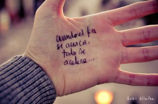
“Cuando el fin se acerca, todo se acelera”, me escribo en la palma de la mano izquierda mientras me tomo mi último té a la menta en una casa de patisserie de Assilah. No tengo mi cuaderno a mano ya que salí por unos minutos en busca de comida y no quiero olvidarme de esa frase que se me cruzó por la cabeza de repente. Me quedan dos días en Marruecos y sí, definitivamente, cuando el fin se acerca, todo empieza a pasar más rápido.
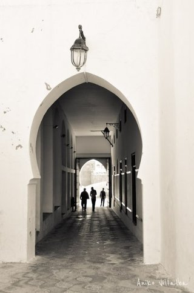 La medina de Assilah
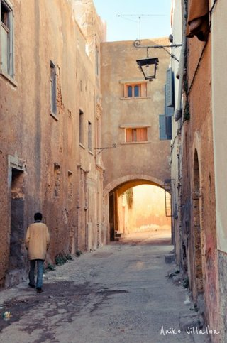La antigua ciudad portuguesa de El Jadida
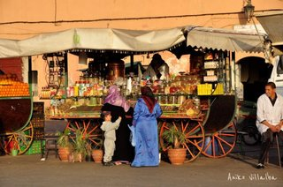Y Marrakech, mis últimas tres paradas en Marruecos
Los días finales de un viaje son los más contradictorios. Por un lado, como ya sabemos que estamos por volver nos invaden el cansancio y esas ganas de estar ya en nuestras casas. Listo, pensamos, aunque queden dos días, el viaje en sí ya se terminó. Ahora si tan solo pudiese cerrar los ojos y aparecer mágicamente en mi cama, sin tener que tomar ningún avión de por medio… Sentimos cierta urgencia, queremos que las últimas horas pasen lo más rápido posible (para estar cuanto antes descansando), pero a la vez sentimos la melancolía que acarrea ese final inminente e intentamos estirar el tiempo para que la partida nunca se concrete. Por eso les digo, son días contradictorios en los que lo mejor —comprobé— es dejar que todo fluya. Uno nunca sabe qué puede pasar durante ese limbo. Y, como todo en la vida, las mejores cosas pasan cuando estamos con un pie en el avión.
En el post/capítulo anterior nos habíamos quedado en Essaouira (un pueblito sobre la costa atlántica marroquí), en mi indecisión, en mi voy o no voy al norte para después tener que volver al sur, en mi doy el viaje por terminado acá o me la juego y visito (medio a las corridas) los lugares que me quedaron pendientes. Finalmente me la jugué y me tomé el bus hacia el norte.
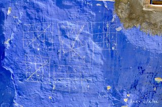 La vida es un ta-te-tí
Parada 1: El Jadida
Me desperté al grito de “El Jadida! El Jadida!” y la voz de Andi que me decía, apurado: “¡Ani! ¡Tenés que bajar! ¡Es acá!”. Nos habíamos tomado el mismo bus desde Essaouira ya que, aunque íbamos a lugares distintos, la ruta era la misma. Era un bus local, uno de esos donde las gallinas y las cabras viajan en el baúl, uno de esos que paran en absolutamente todos los pueblos, pueblitos y pueblecitos intermedios, uno de esos que no tendrán lujo pero tienen color, detalles y olores locales. Entonces si no me bajaba “ya”, el bus seguiría su ruta en escasos segundos. Me despedí de Andi, agarré mis cosas a toda velocidad, bajé del bus, saqué mi mochila del baúl, miré a mi alrededor y dije: “¡Pero esto no es El Jadida!”. Para empezar, no había mar a la vista. Tampoco había ciudad a la vista. Estábamos parados en el medio de la ruta. Apareció un señor —a quien yo intento identificar como ¿el conductor del bus? tal vez—, agarró mi mochila, se la pasó en mano a un taxista y me subió a un Mercedez Benz. Me dijo que yo tenía que seguir camino a El Jadida en ese taxi misterioso y que ya estaba todo pago, que no me preocupara. Así que ahí nos fuimos: el taxista, siete pasajeros más y yo rumbo a El Jadida. Yo seguía semi dormida.
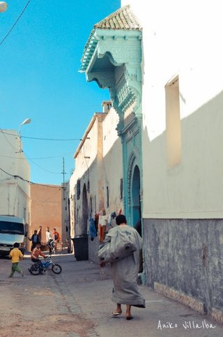Dentro de la Ciudad Portuguesa de El Jadida
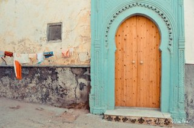
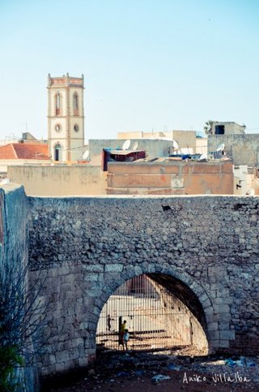
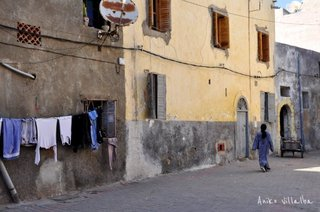
43 kilómetros después, llegamos a la ciudad. El Jadida es una ciudad portuaria de la costa atlántica marroquí que no recibe muchos turistas extranjeros. Fue colonia portuguesa durante más de dos siglos y la antigua fortificación (conocida como “Ciudad Portuguesa”) fue nombrada Patrimonio de la Humanidad por la UNESCO. Y eso fue lo que más me llamó la atención y me impulsó a ir: la mezcla de lo marroquí y lo portugués. El Jadida iba a ser, además, la primera ciudad de Marruecos donde viajaría sola.
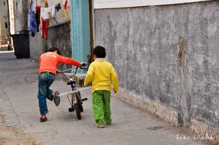
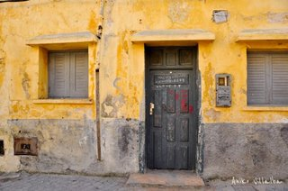
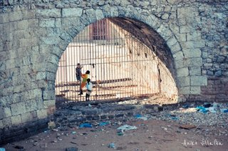
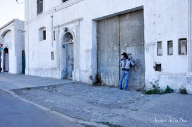
Lo lindo de llegar a lugares poco turísticos es que no existe ese acoso de “comprame comprame comprame” ni tampoco intentan cobrarte de más por todo. En El Jadida la gente local me saludó por la calle, me dijo “Welcome to my city” y me sonrió. Pasé toda la tarde en la Ciudad Portuguesa, esa pequeña fortificación frente al mar, caminando por calles vacías, cruzándome con poca gente, mirando las iglesias, la cisterna (uno de los lugares más misteriosos que pisé en mi vida) y los detalles de la vida cotidiana. A la mañana siguiente cuando salí caminando rumbo a la estación de buses una señora marroquí me saludó con un “Salam” y me preguntó si hablaba francés. Le dije que no, que hablaba español y me empezó a hablar en español mientras caminaba conmigo. Me contó de dónde era, me preguntó a qué me dedicaba y me dijo que hacía más de 30 años que no hablaba español con nadie.
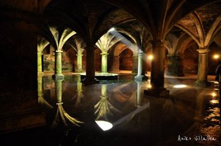
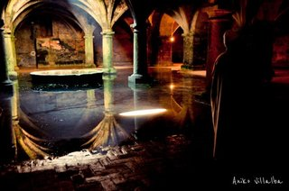La Cisterna Portuguesa, lugar misterioso y atractivo si los hay…
Parada 2: Assilah
Después de un bus a Casablanca, otro bus a Larache y otro taxi misterioso, llegué a Assilah, un pueblito de medina blanca frente al Atlántico, muy cerca de Tanger (donde empecé mi viaje hace casi dos meses). Decidí quedarme tres noches ahí, tranquila, y aprovechar mis últimos días para escribir (algo que ahora, en Barcelona, me está costando horrores). Assilah es una ciudad chiquita y silenciosa, con aspecto de pueblo mediterráneo y con una historia larga y turbulenta: pasó de manos cartaginesas a manos romanas a manos árabes a manos españolas a manos portuguesas a manos marroquíes a manos españolas a manos marroquíes otra vez en sus varios siglos de existencia. Fue un punto de encuentro de los comerciantes del sur de España, fue un centro importante en la ruta del oro sahariano, fue una fortaleza protegida por cañones, fue bombardeada, vivió un régimen de terror. Hoy es uno de los lugares más blancos y tranquilos que conocí en Marruecos. Me quedarán, de recuerdo, las paredes blancas de la medina —esa medina tan vacía— pintadas con murales y la banda sonora de todos esos hombres que me decían por la calle “hola”, “hello”, “france?”, “English?”, “¿español?”, “¡chau guapa!”, “ça va?”, “cht cht”, “pssst pssst” al unísono cual Orquesta Sinfónica Marroquí. Consejo: ignorarlos (aunque les digo que son capaces de levantarle el autoestima a cualquier mujer).
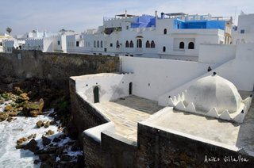 Vista de la medina de Assilah

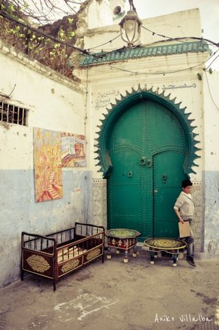
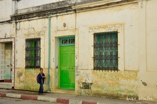
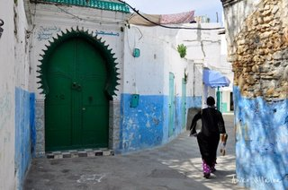
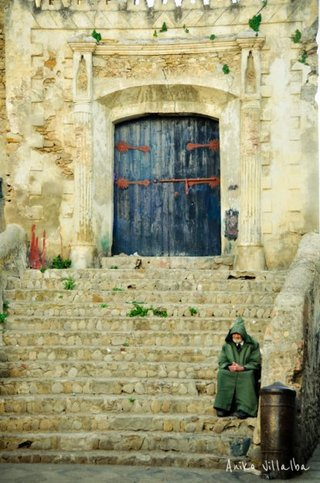
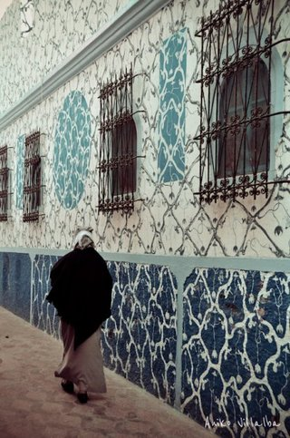
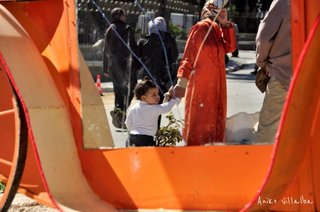
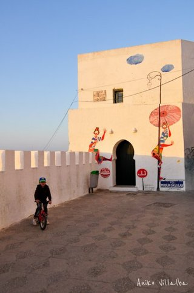
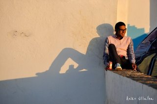
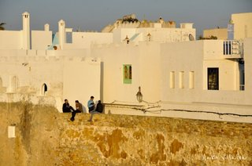
Rumbo a Marrakech: los encuentros espontáneos… son el viaje
Durante mis últimos días en Marruecos no pude evitar pensar si tendría que haberme quedado en Essaouira, si tendría que haber cruzado por Tanger en vez de volver en avión, si me tendría que haber vuelto a España antes, si tendría que haberle dedicado más días a Marrakech, si tendría que. Las ocho horas de tren que me esperaban para volver de Assilah a Marrakech (para tomar el avión a Barcelona) no me emocionaban para nada, pero ahora, escribiendo esto unos días después, no me arrepiento de la ruta que tomé.
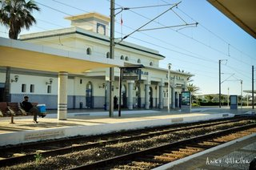
Los trenes deberían ganar el premio a mejor medio de transporte viajero. O, tal vez, al medio de transporte más propenso a los encuentros e historias.
Cuando llegué a la estación de Assilah pensé que había perdido el tren a Marrakech. Espontáneamente elegí a una de las personas que estaba sentada en la estación, un señor de unos 65-70 años, y le pregunté si el tren ya se había ido. Me dijo que no. Cinco minutos después, el tren llegó. Mientras nos subíamos le pregunté si era marroquí. Si bien su aspecto no era marroquí, vi que hablaba y leía árabe, entonces me intrigó. Me dijo que no, que era un estadounidense nacido en Baghdad (Irak), que su papá había sido soldado en Irak y que su familia era asiria (un grupo étnico minoritario que habitan en Irak, el noreste de Siria, el noroeste de Irán y el sudeste de Turquía). “En la Antigüedad el imperio asirio estaba situado en la antigua Mesopotamia, en el norte de una lugar llamado Babilonia”, me explicó en inglés. “Yo provengo de un lugar que ya no existe”.
Si bien él había comprado un pasaje para viajar en primera clase, se quedó sentado conmigo en segunda. Y pasó eso que pasa cuando uno conoce a un extraño que sabe que jamás volverá a ver: me contó toda su vida. Que creció y vivió en San Francisco, que tuvo tres estaciones de servicio, que viajó por el mundo y eligió quedarse en Assilah ya que buscaba un lugar “más grande que un pueblo y más chico que una ciudad”, que nunca se casó “legalmente” ya que no creía en el matrimonio, que un marroquí lo había estafado y tendría que quedarse en Marruecos hasta que terminara el juicio. Me regaló frases como: “If you ever lose your way, follow the birds” (Si perdés tu camino, seguí el de los pájaros), “The world is your school” (El mundo es tu escuela) y me dijo que yo estaba viajando con mucho peso, que no necesitaba tanto. Tendré que ir aprendiendo a despojarme más y más de las cosas (¡pero la ropa de invierno la necesito!). Se bajó en Rabat y antes de irse me pidió mi email y me dijo que, si bien casi nunca usaba internet, me enviará noticias una vez por mes.
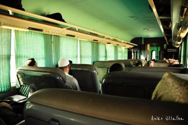
Yo seguí hasta Casablanca (una hora más desde Rabat) donde tuve que hacer cambio de tren. Me senté contra la ventana y en el asiento de al lado se me sentó un viajero que me miró y me saludó en inglés. Me puse a leer, pero ese viajero era una de esas personas que no pueden contenerse las ganas de hablar.
—¿De dónde sos? (Fue todo en inglés, pero traduzco)
—De Argentina, ¿y vos?
—De Canadá, Vancouver.
—¡Qué envidia! ¡Amo Vancouver! Tengo familia ahí y me parece una de las ciudades más lindas del mundo.
—Sí, la verdad que se vive muy bien, tiene mucha naturaleza, la gente es tranquila… ¿Recién llegás a Marruecos?
—No, ya me estoy yendo, estuve casi dos meses viajando por el país y ahora vuelvo a Marrakech para tomar el vuelo a Barcelona. ¿Ustedes? (Vi que iba con otro chico que se había sentado en otro asiento)
—Llegamos ayer a Casablanca, vamos a estar 10 días en Marruecos y 5 en España, lamentablemente sólo tenemos quince días.
—¿Y ya saben qué van a ver?
—Bueno, estuve armando un pequeño itinerario…
Y antes de terminar sacó un fajo de 20 hojas A4 con un itinerario detalladísimo (que tal vez hasta incluiría los horarios para ir al baño y estornudar), junto con mapas de todas las ciudades (con la ruta de la estación de tren hasta el hotel marcada en amarillo y la distancia en kilómetros y en tiempo). No pude evitar reírme mucho, aunque con simpatía.
—¡Qué itinerario! ¡Tenés todo planeado!
—Nahh, es algo que hice rápido antes de salir…
—¿A qué te dedicás en Vancouver?
—Soy planeador urbano.
—¡Con razón!
Y nos reímos otra vez.
—Yo viajo de manera totalmente opuesta a la tuya, generalmente nunca sé dónde voy a dormir.
—Es que nosotros tenemos pocos días… ¿Qué te pareció Tánger? Mucha gente me dijo que no le gustó, que es un poco peligroso.
—A mí me encantó… Me impactó muchísimo. Tal vez porque fue el primer lugar de Marruecos que pisé y sentí que estaba entrando a otro mundo, a un lugar lleno de colores, de ruidos, de caos, de olores, de gente haciendo cosas en la calle…
Hablamos sin parar durante las tres horas de Casablanca a Marrakech. Nunca pensé que las horas de ese viaje que tan pocas ganas tenía de hacer se me iban a pasar tan rápido. Compartí un taxi con los dos canadienses hasta la Plaza Djemaa el-fna y quedamos en encontrarnos ahí esa misma noche (mi última noche en Marruecos) para cenar en los puestitos al aire libre. A la vez, esa misma tarde me contactaron dos marroquíes de Couchsurfing que estaban en Marrakech, así que también me los encontré y salimos los cuatro a comer. Hace mucho que no me reía tanto. Después de nuestra lucha inicial, Marrakech y yo nos amigamos. La onda que sentí esta vez fue distinta, y la verdad que hasta me dieron ganas de quedarme varios días más.
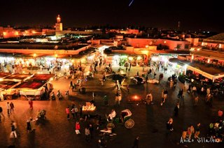 La Plaza Djemaa el-fna (Marrakech) de noche
Y mientras estaba ahí, en mi última noche en Marruecos, tomando un licuado con mis cuatro nuevos amigos, pensaba en cómo los itinerarios pueden cambiar en un segundo. Me preguntaba si en ese plan tan detallado y preciso, el canadiense tendría un ítem que dijera: “Lunes 19 de marzo, 12:45: Tomar el tren a Marrakech, sentarme al lado de una argentina, charlar acerca de la vida, cambiar los planes e ir en taxi a la Plaza en vez de caminando, volver a la Plaza a la noche para tomar una sopa y comer tajine con dos marroquíes desconocidos y con una viajera desconocida. Pasarla bien. Reírnos mucho”. Probablemente no. Por eso creo que en un viaje (y en la vida) no se puede planear tanto. O, si se planea, siempre hay que dejar lugar a la improvisación, ya que tanto la vida como los viajes están hechos a base de encuentros espontáneos. Y nunca se sabe qué rumbo nos puede hacer tomar cada persona que vamos conociendo.
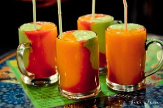
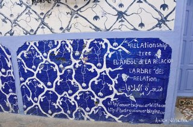 Formamos una enorme red
- Cambio: 1 euro = 11 dirham
- Bus de Essaouira a El Jadida: 70 dirham (+ 5 dirham por el equipaje)
- Hotel en El Jadida: 80 dirham por una habitación simple
- Bus de El Jadida a Casablanca: 20 dirham
- Bus de Casablanca a Assilah: 80 dirham
- Hotel en Assilah: 60 a 100 dirham por una habitación (casi todo el alojamiento está fuera de la medina, cerca de la entrada)
- Tren de Assilah a Marrakech: 186 dirham en segunda clase (8 horas)
- Más fotos: Assilah, El Jadida, Marrakech.

 La luz en el piso
La luz en el piso
 … y son necesarias las velas.
… y son necesarias las velas. Postal que le mandé a una amiga desde Sevilla
Postal que le mandé a una amiga desde Sevilla


 La medina de Tanger
La medina de Tanger
 Tarifa
Tarifa Gente simpática en Tarifa
Gente simpática en Tarifa El ferry
El ferry Vendedor callejero en Tanger
Vendedor callejero en Tanger


 La medina vista de afuera…
La medina vista de afuera… … y su vida por dentro
… y su vida por dentro


 Con Andi y Quesito
Con Andi y Quesito Charlando con otro amigo marroquí que algo nos quería vender (ya ni me acuerdo qué)
Charlando con otro amigo marroquí que algo nos quería vender (ya ni me acuerdo qué)


 La primera escena: la pareja llega al hotel en helicóptero (foto: Andi)
La primera escena: la pareja llega al hotel en helicóptero (foto: Andi) Tomando el té con Nourdin, el dueño de la pensión donde nos alojamos
Tomando el té con Nourdin, el dueño de la pensión donde nos alojamos Me hice amiga de una nenita en la calle y, cuando me dio un beso en el cachete, me dieron ganas de secuestrarla y llevármela en la mochila por el mundo.
Me hice amiga de una nenita en la calle y, cuando me dio un beso en el cachete, me dieron ganas de secuestrarla y llevármela en la mochila por el mundo. Una de las tantas fotos que le saqué.
Una de las tantas fotos que le saqué. Un grupo de chicos que se divirtió posando para nuestras cámaras.
Un grupo de chicos que se divirtió posando para nuestras cámaras. Nuestro primer almuerzo “comunitario” en la pensión
Nuestro primer almuerzo “comunitario” en la pensión Algunas imágenes de la medina por dentro
Algunas imágenes de la medina por dentro